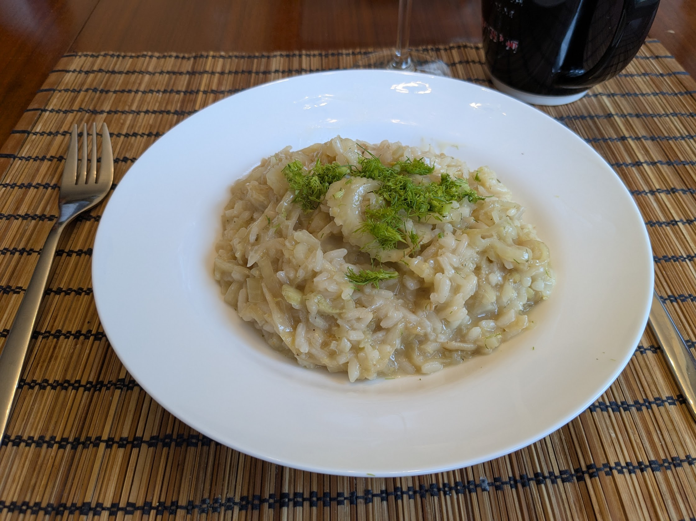

Risotto au fenouil et citron

Pour 4 personnes :
- Deux gros fenouils
- Deux oignons
- Deux gousses d'ail
- Deux citrons
- 300g de riz à risotto
- Une demi-bouteille de vin blanc
- 1.5L de bouillon de légumes ou de poulet
- 50g de parmesan
- Sel, poivre, beurre, huile d'olive
- Faire chauffer le bouillon. Laver les fenouils, enlever la partie très dure du dessous, et séparer le reste en trois : d'un côté les quelques branches et feuilles vertes sur le dessus, de l'autre les couches du dessus, et enfin les couches du milieu.
- Éplucher et émincer l'oignon et les couches du dessus du fenouil. Les faire revenir dans une poêle à bords hauts dans une noisette beurre à feu moyen.
- Éplucher et émincer l'ail. Le rajouter dans la poêle lorsque les oignons commencent à devenir translucides, avec le riz et un peu d'huile d'olive.
- Lorsque le riz commence tout juste à prendre des couleurs, ajouter les deux tiers du vin, mélanger, et faire cuire jusqu'à ce que ça soit évaporé. Puis, ajouter le bouillon louche par louche, en mélangeant régulièrement et en ajoutant du bouillon dès qu'on ne voit plus de liquide au fond de la poêle.
- Pendant ce temps, couper le centre du fenouil en tranches fines, et faire revenir les tranches dans une autre poêle dans du beurre. Lorsque ça commence à prendre une belle couleur brune, ajouter le vin et une louche de bouillon, baisser le feu, et faire mijoter jusqu'à ce que ça devienne tendre.
- Pendant ce temps, laver, sécher, et zester le citron, et râper le parmesan. Lorsque le riz est cuit (il faut goûter), ajouter le zeste, le parmesan, saler légèrement, poivrer généreusement.
- Mélanger le risotto cuit avec le fenouil juste avant de servir, avec les petites branches vertes sur le dessus pour décorer.
Remarque : on peut accompager ça de crevettes cuites.